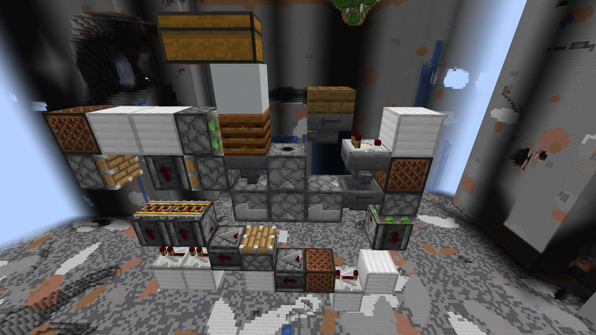
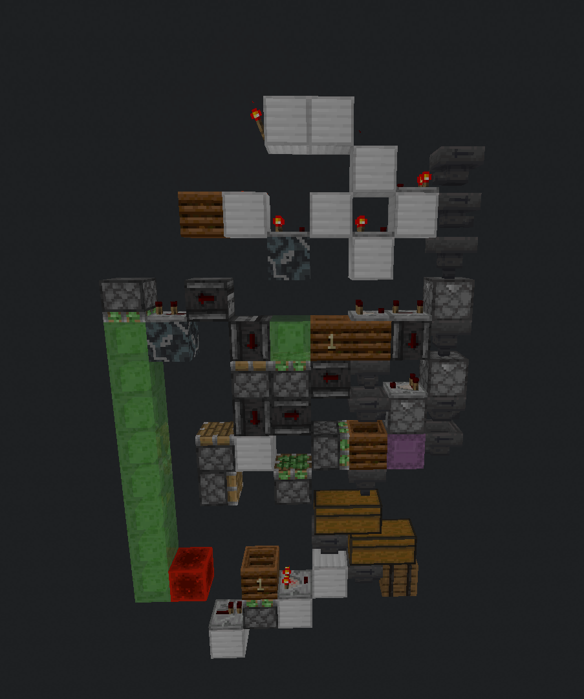

2022-12-07
I’ve always been intrigued by large Minecraft storages. Servers like Scicraft and Mechanists do this stuff as if it’s a peace of cake. Ever since I started getting into technical Minecraft, I’ve wanted to build a large storage system to sort every item in the game, and I am currently building one.
Me and a friend of mine are currently playing on and off on a server we like to call Quasicraft, it’s an smp with just the two of us and we like to build ambitious stuff while keeping them somewhat small and pretty. Before we decided on this playstyle, we tried to build the best and biggest stuff ever. This was really bad for our motivation and mental health, so we went with this more relaxed approach. I already had designed a huge storage system before this decision, so that one got scrapped. It was a very big and good storage system, but it was way to much for us.
 Old storage, codename 'The Spire'
Old storage, codename 'The Spire'
This brings us into the new storage design. We decided on some
smaller designs and less storage, as we’re just with two and we wont
gather 1 million items anytime soon. With these new parameters in mind,
I started with the new system, and as usual, I started with the bulk
storage. For anyone who isn’t familiar with this concept, in the bulk
storage you store all the items you’d have more than 4 thousand of. A
few criteria for the bulk storage were:
- It has to be easy to
build
- It needs to store enough items
- It should store items
in shulkerboxes
With these criteria I got to designing, and oh that was a journey. My main concept was to have accessible shulker box loaders, which output full boxes into chests.
My first idea with this concept was to have shulker loaders in the floor, which you could access from there. This idea was way to complex, because I needed to design custom box breakers and would mean you’d have items dropping from the ceiling constantly, so this idea wouldn’t work.

The floor based box loaderThe next idea was to go over it the ‘usual’ way, just use accessible box loaders from the top and a design that was already built. After looking around on the storage tech discord, I found one by vktec that was quite promising. After this, it was a lot of fitting to find out how you could have access to the box while still remaining relatively far away from the chests, which left just 250 thousand items of storage. This is a lot of course, but I was hoping for slightly more.

After fitting in the chests and loader in, I needed to add an item filter, and those are never compact. I just used a signal strength 15 filter, which uses some weird comparator mechanics to achieve a filter. Then came the hopper locking, which is one of the most important things in storage tech. A single sorter had 11 hoppers in this design and a slice has 22. This is a lot of hoppers, which make your game lag a lot. The problem was that I could lock only 2 hoppers at all time. I could lock another 3 hoppers per item with a line, but this would only be functional when no sorting whatsoever is going on. And locking those three hoppers caused me some annoyances, but when that was worked out, I had a finished bulk slice that was tileable.
All in all, this bulk slice cost me about twelve hours of raw work, and maybe about a month of fitting Minecraft in my busy schedule. This slice is just the start of the large main storage I’m planning on building. If you’re interested, I’m planning on documenting the rest of the storage build, which will of course have a cool codename when I think of one.
{kind=link}